Visualization with scCulturePredict
Niccolò Bianchi
2025-08-27
Source:vignettes/scCulturePredict-visualization.Rmd
scCulturePredict-visualization.RmdIntroduction
Effective visualization is crucial for interpreting single-cell RNA
sequencing data. The scCulturePredict package provides a
comprehensive set of visualization functions designed to help you
explore your data and evaluate prediction results. This vignette
demonstrates how to use these visualization tools to create informative
and publication-ready figures.
Creating Example Data
For this vignette, we’ll create some example data to demonstrate the visualization capabilities:
# Create a mock Seurat object
create_mock_seurat <- function() {
# Create a small Seurat object with UMAP coordinates
set.seed(42)
counts <- matrix(rpois(100 * 30, 10), nrow = 100, ncol = 30)
rownames(counts) <- paste0("gene", 1:100)
colnames(counts) <- paste0("cell", 1:30)
seurat <- Seurat::CreateSeuratObject(counts = counts)
# Add UMAP coordinates and metadata
seurat@meta.data$UMAP_1 <- rnorm(30)
seurat@meta.data$UMAP_2 <- rnorm(30)
seurat@meta.data$sample <- rep(c("A", "B", "C"), each = 10)
seurat@meta.data$cluster <- rep(c(1, 2, 3), times = 10)
seurat@meta.data$percent_mito <- runif(30, 0, 10)
return(seurat)
}
# Create mock evaluation results
create_mock_evaluation <- function() {
list(
direct_accuracy = data.frame(
sample = c("A", "B", "C"),
correct = c(8, 7, 9),
percent = c("80%", "70%", "90%")
),
direct_table = as.table(matrix(c(8, 1, 1, 1, 7, 2, 1, 2, 7),
nrow = 3,
dimnames = list(c("A", "B", "C"), c("A", "B", "C"))
)),
svm_accuracy = data.frame(
sample = c("A", "B", "C"),
correct = c(9, 8, 7),
percent = c("90%", "80%", "70%")
),
svm_table = as.table(matrix(c(9, 0, 1, 1, 8, 1, 0, 2, 7),
nrow = 3,
dimnames = list(c("A", "B", "C"), c("A", "B", "C"))
)),
threshold_table = as.table(matrix(c(7, 1, 0, 2, 6, 1, 1, 2, 8),
nrow = 3,
dimnames = list(c("A", "B", "C"), c("A", "B", "C"))
))
)
}
# Generate example data
seurat_object <- create_mock_seurat()
evaluation_results <- create_mock_evaluation()Basic Visualizations
UMAP Visualization
For UMAP visualizations, use Seurat’s built-in DimPlot
function or plot_scCulture for scCulture results:
# Basic UMAP plot using metadata coordinates
library(ggplot2)
umap_plot <- ggplot(seurat_object@meta.data,
aes(x = UMAP_1, y = UMAP_2, color = sample)) +
geom_point(size = 2) +
theme_minimal() +
labs(title = "UMAP of Example Data",
x = "UMAP_1",
y = "UMAP_2",
color = "Sample") +
scale_color_manual(values = c("A" = "#E41A1C", "B" = "#377EB8", "C" = "#4DAF4A"))
print(umap_plot)
Customizing UMAP Plots
You can customize various aspects of the UMAP plot:
# Customized UMAP plot
umap_custom <- ggplot(seurat_object@meta.data,
aes(x = UMAP_1, y = UMAP_2, color = factor(cluster))) +
geom_point(size = 2.5) +
theme_minimal() +
labs(title = "UMAP by Cluster",
x = "UMAP_1",
y = "UMAP_2",
color = "Cluster ID") +
scale_color_discrete()
print(umap_custom)You can also use other metadata columns for coloring:
# UMAP with continuous variable
umap_continuous <- ggplot(seurat_object@meta.data,
aes(x = UMAP_1, y = UMAP_2, color = percent_mito)) +
geom_point(size = 2) +
theme_minimal() +
labs(title = "UMAP by Mitochondrial Percentage",
x = "UMAP_1",
y = "UMAP_2",
color = "% Mito") +
scale_color_viridis_c()
print(umap_continuous)Combining Multiple UMAP Plots
The plots can be combined using the patchwork
package:
# Combine multiple UMAP plots
combined_plot <- umap_plot + umap_custom + umap_continuous +
plot_layout(ncol = 2) +
plot_annotation(title = "Multiple UMAP Visualizations")
print(combined_plot)Prediction Evaluation Visualizations
Evaluation Metrics Plots
Note: The create_evaluation_metrics_plot function has
been moved to inst/extras/alternative_implementations.R
# Metrics visualization
# The create_evaluation_metrics_plot function is now in inst/extras/alternative_implementations.R
# metrics_plot <- create_evaluation_metrics_plot(
# evaluation_results = evaluation_results,
# plot_type = "metrics",
# title = "Direct Prediction Accuracy"
# )
# Alternative: Use create_evaluation_plots for comprehensive visualization
evaluation_plots <- create_evaluation_plots(
seurat_object = seurat_object,
results_dir = "./results",
verbose = FALSE
)
# Display the plots (plots are saved to results directory)
# evaluation_plotsCustomizing Accuracy Plots
You can customize the color palette:
# Custom color palette
custom_colors <- c("A" = "#E41A1C", "B" = "#377EB8", "C" = "#4DAF4A")
# Customized accuracy plot
# The create_evaluation_metrics_plot function is now in inst/extras/alternative_implementations.R
# custom_accuracy <- create_evaluation_metrics_plot(
# evaluation_results = evaluation_results,
# plot_type = "metrics",
# title = "Custom Accuracy Plot",
# color_palette = c("#2E86AB", "#A23B72", "#F18F01")
# )
#
# print(custom_accuracy)Confusion Matrix Visualization
Note: The create_evaluation_metrics_plot function has
been moved to inst/extras/alternative_implementations.R
# Confusion matrix visualization
# The create_evaluation_metrics_plot function is now in inst/extras/alternative_implementations.R
# confusion_plot <- create_evaluation_metrics_plot(
# evaluation_results = evaluation_results,
# plot_type = "confusion",
# title = "Direct Prediction Confusion Matrix"
# )
# Alternative confusion matrix view
# Note: Individual confusion matrix functions have been moved to inst/extras/alternative_implementations.R
# svm_confusion <- create_evaluation_metrics_plot(
# evaluation_results = evaluation_results,
# plot_type = "confusion",
# title = "SVM Prediction Confusion Matrix"
# )
# For comprehensive evaluation including all methods
# Use create_evaluation_plots which generates multiple visualizations
all_plots <- create_evaluation_plots(
seurat_object = seurat_object,
results_dir = "./results",
verbose = FALSE
)
# Individual plots can be accessed from the results
# Display the plots
# Note: Individual plot objects would need to be created separately
# direct_confusion
# svm_confusion
# threshold_confusionCustomizing Confusion Heatmaps
You can customize the color gradient:
# Custom color gradient
custom_gradient <- c("white", "navy")
# Customized confusion matrix visualization
# The create_evaluation_metrics_plot function is now in inst/extras/alternative_implementations.R
# custom_confusion <- create_evaluation_metrics_plot(
# evaluation_results = evaluation_results,
# plot_type = "confusion",
# color_palette = c("#2E86AB", "#A23B72", "#F18F01"),
# title = "Custom Confusion Matrix"
# )
#
# print(custom_confusion)Evaluation Metrics Visualization
Note: The create_evaluation_metrics_plot function has
been moved to inst/extras/alternative_implementations.R
# For this demonstration, we need additional metrics that would come from a real evaluation
# This code is provided as an example but not evaluated in this vignette
# Create evaluation metrics plot
# The create_evaluation_metrics_plot function is now in inst/extras/alternative_implementations.R
# metrics_plot <- create_evaluation_metrics_plot(
# evaluation_results = complete_evaluation_results,
# plot_type = "metrics",
# title = "Prediction Performance Metrics"
# )
#
# print(metrics_plot)
#
# # ROC curve
# roc_plot <- create_evaluation_metrics_plot(
# evaluation_results = complete_evaluation_results,
# plot_type = "roc",
# title = "ROC Curve"
# )
#
# print(roc_plot)
#
# # Precision-Recall curve
# pr_plot <- create_evaluation_metrics_plot(
# evaluation_results = complete_evaluation_results,
# plot_type = "pr",
# title = "Precision-Recall Curve"
# )
#
# print(pr_plot)Saving Visualization Results
Visualization plots can be saved using ggplot2::ggsave()
or base R graphics functions:
# Create directory for results
results_dir <- "scCulturePredict_results"
if (!dir.exists(results_dir)) dir.create(results_dir)
# Save individual plots using ggplot2::ggsave
# Note: save_visualization_plots has been moved to inst/extras/alternative_implementations.R
# Save confusion matrix plot
if (exists("confusion_plot")) {
ggplot2::ggsave(
filename = file.path(results_dir, "example_confusion.png"),
plot = confusion_plot,
width = 10,
height = 8,
dpi = 300
)
}
# Save metrics plot
if (exists("metrics_plot")) {
ggplot2::ggsave(
filename = file.path(results_dir, "example_metrics.png"),
plot = metrics_plot,
width = 10,
height = 8,
dpi = 300
)
}
# Save UMAP plot
if (exists("umap_plot")) {
ggplot2::ggsave(
filename = file.path(results_dir, "example_umap.png"),
plot = umap_plot,
width = 10,
height = 8,
dpi = 300
)
}This will save the following files to the specified directory: - example_umap.png - umap_experimental.png (from create_evaluation_plots)
Advanced Customization
Since all visualization functions return ggplot objects,
you can further customize them using standard ggplot2
functions:
# Create a highly customized plot using ggplot2 directly
customized_plot <- ggplot(seurat_object@meta.data,
aes(x = UMAP_1, y = UMAP_2, color = sample)) +
geom_point(size = 2) +
theme_minimal() +
labs(
title = "Highly Customized UMAP Plot",
subtitle = "With additional annotations",
caption = "Created with scCulturePredict",
x = "UMAP_1",
y = "UMAP_2",
color = "Sample"
) +
theme(
plot.title = element_text(size = 16, face = "bold"),
plot.subtitle = element_text(size = 12, color = "darkgray"),
legend.position = "bottom",
panel.grid.major = element_line(color = "lightgray", linetype = "dashed"),
panel.background = element_rect(fill = "aliceblue")
) +
scale_color_brewer(palette = "Set1")
print(customized_plot)Visualizing SingleCellExperiment Results
The scCulturePredict package seamlessly handles
visualization of results from SingleCellExperiment objects. The same
visualization functions work regardless of the input data format.
Visualizing SCE-based Analysis
# Run analysis with SCE data
results_sce <- scCulture(
sce_data_path = "path/to/sce_data.rds",
input_type = "sce",
kegg_file = system.file("extdata", "kegg", "example_pathway.keg", package = "scCulturePredict"),
output_dir = "./sce_results",
mode = "build",
experiment_id = "sce_viz_example",
verbose = TRUE
)
# Visualize SCE results - same function as for 10X data
plot_sce <- plot_scCulture(results_sce)
print(plot_sce)
# Access the underlying ggplot objects for customization
if (is.list(plot_sce)) {
# For PREDICT mode, multiple plots are returned
plot_sce$predictions +
scale_color_viridis_d(option = "magma") +
theme_dark()
} else {
# For BUILD mode, single plot is returned
plot_sce +
ggtitle("SCE Data Analysis Results")
}Comparing 10X and SCE Visualizations
When working with both data formats, you can create side-by-side comparisons:
library(patchwork)
# Results from 10X data
results_10x <- scCulture(
tenx_data_dir = "path/to/10x_data",
input_type = "10x",
kegg_file = system.file("extdata", "kegg", "example_pathway.keg", package = "scCulturePredict"),
output_dir = "./10x_results",
mode = "build",
experiment_id = "10x_example",
verbose = TRUE
)
# Results from SCE data
results_sce <- scCulture(
sce_data_path = "path/to/sce_data.rds",
input_type = "sce",
kegg_file = system.file("extdata", "kegg", "example_pathway.keg", package = "scCulturePredict"),
output_dir = "./sce_results",
mode = "build",
experiment_id = "sce_example",
verbose = TRUE
)
# Create plots
plot_10x <- plot_scCulture(results_10x) + ggtitle("10X Data")
plot_sce <- plot_scCulture(results_sce) + ggtitle("SCE Data")
# Combine using patchwork
combined_plot <- plot_10x + plot_sce +
plot_layout(ncol = 2) +
plot_annotation(title = "Comparison of Data Formats")
print(combined_plot)Cross-Dataset Prediction Visualization
Visualizing predictions when training on one format and predicting on another:
# Train on 10X
model_10x <- scCulture(
tenx_data_dir = "path/to/labeled_10x",
input_type = "10x",
kegg_file = system.file("extdata", "kegg", "example_pathway.keg", package = "scCulturePredict"),
output_dir = "./model_10x",
mode = "build",
experiment_id = "training",
verbose = TRUE
)
# Predict on SCE
predictions_sce <- scCulture(
sce_data_path = "path/to/unlabeled_sce.rds",
input_type = "sce",
output_dir = "./predictions_sce",
mode = "predict",
fingerprint_file = model_10x$fingerprint_file,
experiment_id = "prediction",
verbose = TRUE
)
# Visualize cross-dataset predictions
pred_plot <- plot_scCulture(predictions_sce)
# The prediction plot shows both predictions and confidence
if (is.list(pred_plot)) {
# Customize prediction plot
pred_plot$predictions <- pred_plot$predictions +
theme_minimal() +
labs(title = "Cross-Dataset Predictions",
subtitle = "Model: 10X → Query: SCE")
# Customize confidence plot
pred_plot$confidence <- pred_plot$confidence +
scale_color_gradient(low = "gray80", high = "darkred") +
labs(title = "Prediction Confidence",
subtitle = "Higher values indicate more reliable predictions")
# Display both
library(patchwork)
combined <- pred_plot$predictions / pred_plot$confidence
print(combined)
}Conclusion
The scCulturePredict package provides a comprehensive
set of visualization functions for exploring single-cell data and
evaluating prediction results. These functions generate
publication-ready figures that can be further customized using the
powerful ggplot2 framework.
Session Info
sessionInfo()
#> R version 4.5.1 (2025-06-13)
#> Platform: x86_64-pc-linux-gnu
#> Running under: Ubuntu 24.04.2 LTS
#>
#> Matrix products: default
#> BLAS: /usr/lib/x86_64-linux-gnu/openblas-pthread/libblas.so.3
#> LAPACK: /usr/lib/x86_64-linux-gnu/openblas-pthread/libopenblasp-r0.3.26.so; LAPACK version 3.12.0
#>
#> locale:
#> [1] LC_CTYPE=C.UTF-8 LC_NUMERIC=C LC_TIME=C.UTF-8
#> [4] LC_COLLATE=C.UTF-8 LC_MONETARY=C.UTF-8 LC_MESSAGES=C.UTF-8
#> [7] LC_PAPER=C.UTF-8 LC_NAME=C LC_ADDRESS=C
#> [10] LC_TELEPHONE=C LC_MEASUREMENT=C.UTF-8 LC_IDENTIFICATION=C
#>
#> time zone: UTC
#> tzcode source: system (glibc)
#>
#> attached base packages:
#> [1] stats graphics grDevices utils datasets methods base
#>
#> other attached packages:
#> [1] patchwork_1.3.2 ggplot2_3.5.2 Seurat_5.3.0
#> [4] SeuratObject_5.1.0 sp_2.2-0 scCulturePredict_0.99.30
#> [7] BiocStyle_2.36.0
#>
#> loaded via a namespace (and not attached):
#> [1] RColorBrewer_1.1-3 jsonlite_2.0.0
#> [3] magrittr_2.0.3 spatstat.utils_3.1-5
#> [5] farver_2.1.2 rmarkdown_2.29
#> [7] fs_1.6.6 ragg_1.4.0
#> [9] vctrs_0.6.5 ROCR_1.0-11
#> [11] spatstat.explore_3.5-2 htmltools_0.5.8.1
#> [13] S4Arrays_1.8.1 SparseArray_1.8.1
#> [15] sass_0.4.10 sctransform_0.4.2
#> [17] parallelly_1.45.1 KernSmooth_2.23-26
#> [19] bslib_0.9.0 htmlwidgets_1.6.4
#> [21] desc_1.4.3 ica_1.0-3
#> [23] plyr_1.8.9 plotly_4.11.0
#> [25] zoo_1.8-14 cachem_1.1.0
#> [27] igraph_2.1.4 mime_0.13
#> [29] lifecycle_1.0.4 pkgconfig_2.0.3
#> [31] Matrix_1.7-3 R6_2.6.1
#> [33] fastmap_1.2.0 GenomeInfoDbData_1.2.14
#> [35] MatrixGenerics_1.20.0 fitdistrplus_1.2-4
#> [37] future_1.67.0 shiny_1.11.1
#> [39] digest_0.6.37 S4Vectors_0.46.0
#> [41] tensor_1.5.1 RSpectra_0.16-2
#> [43] irlba_2.3.5.1 textshaping_1.0.1
#> [45] GenomicRanges_1.60.0 labeling_0.4.3
#> [47] progressr_0.15.1 spatstat.sparse_3.1-0
#> [49] polyclip_1.10-7 httr_1.4.7
#> [51] abind_1.4-8 compiler_4.5.1
#> [53] withr_3.0.2 fastDummies_1.7.5
#> [55] MASS_7.3-65 DelayedArray_0.34.1
#> [57] tools_4.5.1 lmtest_0.9-40
#> [59] httpuv_1.6.16 future.apply_1.20.0
#> [61] goftest_1.2-3 glue_1.8.0
#> [63] nlme_3.1-168 promises_1.3.3
#> [65] grid_4.5.1 Rtsne_0.17
#> [67] cluster_2.1.8.1 reshape2_1.4.4
#> [69] generics_0.1.4 gtable_0.3.6
#> [71] spatstat.data_3.1-8 tidyr_1.3.1
#> [73] data.table_1.17.8 XVector_0.48.0
#> [75] spatstat.geom_3.5-0 BiocGenerics_0.54.0
#> [77] RcppAnnoy_0.0.22 ggrepel_0.9.6
#> [79] RANN_2.6.2 pillar_1.11.0
#> [81] stringr_1.5.1 spam_2.11-1
#> [83] RcppHNSW_0.6.0 later_1.4.3
#> [85] splines_4.5.1 dplyr_1.1.4
#> [87] lattice_0.22-7 deldir_2.0-4
#> [89] survival_3.8-3 tidyselect_1.2.1
#> [91] SingleCellExperiment_1.30.1 miniUI_0.1.2
#> [93] pbapply_1.7-4 knitr_1.50
#> [95] gridExtra_2.3 bookdown_0.44
#> [97] IRanges_2.42.0 SummarizedExperiment_1.38.1
#> [99] scattermore_1.2 stats4_4.5.1
#> [101] xfun_0.53 Biobase_2.68.0
#> [103] matrixStats_1.5.0 stringi_1.8.7
#> [105] UCSC.utils_1.4.0 lazyeval_0.2.2
#> [107] yaml_2.3.10 evaluate_1.0.4
#> [109] codetools_0.2-20 tibble_3.3.0
#> [111] BiocManager_1.30.26 cli_3.6.5
#> [113] uwot_0.2.3 xtable_1.8-4
#> [115] reticulate_1.43.0 systemfonts_1.2.3
#> [117] jquerylib_0.1.4 Rcpp_1.1.0
#> [119] GenomeInfoDb_1.44.2 spatstat.random_3.4-1
#> [121] globals_0.18.0 png_0.1-8
#> [123] spatstat.univar_3.1-4 parallel_4.5.1
#> [125] pkgdown_2.1.3 dotCall64_1.2
#> [127] listenv_0.9.1 viridisLite_0.4.2
#> [129] scales_1.4.0 ggridges_0.5.6
#> [131] purrr_1.1.0 crayon_1.5.3
#> [133] rlang_1.1.6 cowplot_1.2.0